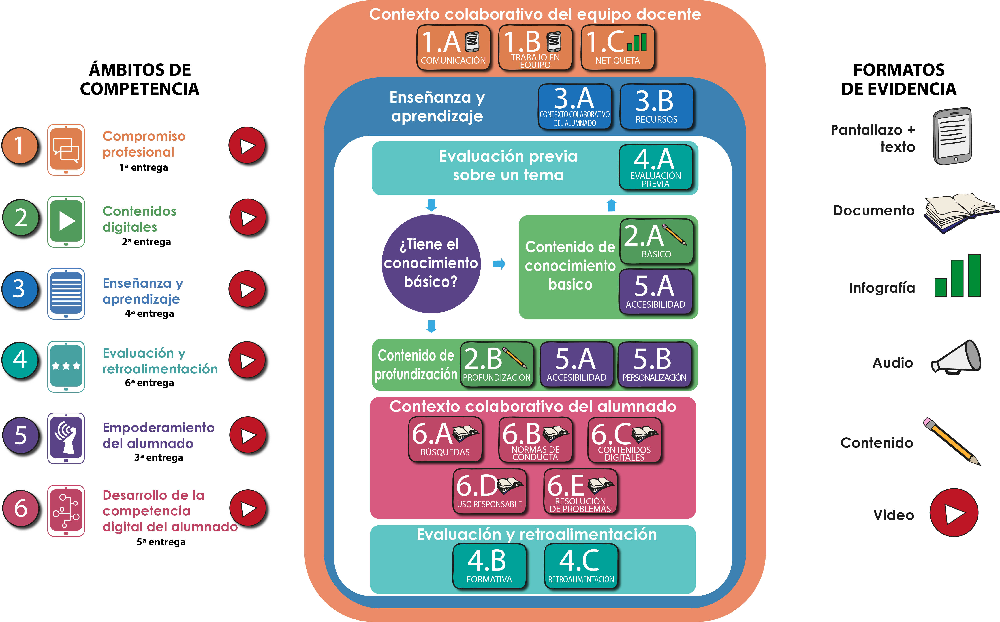
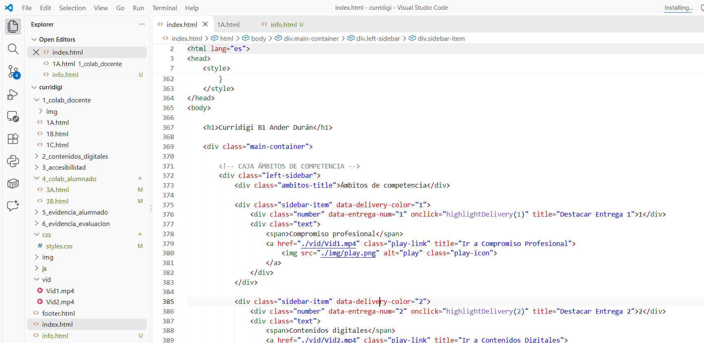
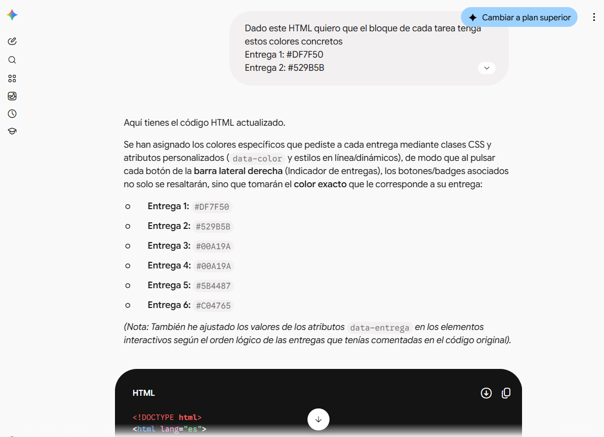
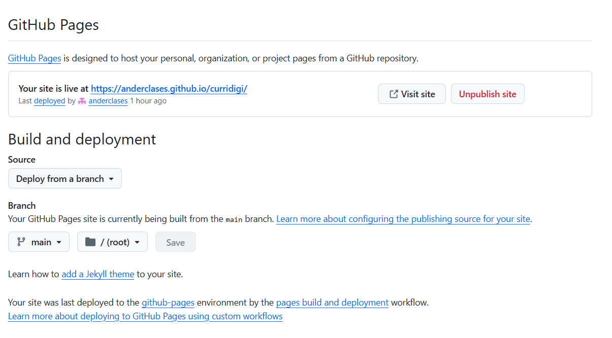

Este portfolio se ha generado en base al diseño original propuesto, pero se ha desarrollado con lenguajes de programación web que facilitan la accesibilidad multiplataforma y estan cubiertos bajo normas de Open Source lo que democratiza los contenidos. esta forma de desarrollo se presenta cómo una alternativa ante herramientas como Genially que están muy unidas a sistemas de pago y suscripción limitando enormemente las funciones avanzadas.

Es cierto que para poder llevar esto a cabo es necesario conocimientos técnicos sobre el desarrollo, pero en el contexto en el que trabajo la Formación profesional de informática, es una forma de demostrar de manera tangible lo utiles que son los conocimientos de programación web.
Visual Sudio Code es un editor de código especialmente bueno para el desarrollo de Apicaciones Web. En este caso al ser un desarrollo que combina CSS, HTML y Javascript es el editor perfecto para trabajar.

Se ha usado la IA Gemini cómo herramienta de maquetación y gestor de programación del código y estética. Ha demostrado ser útil para estandarizar los contenidos entre las distintas páginas. En todo momento el responsable del desarrollo Ander Durán, ha revisado el códgo y comporbado que la web muestra los resultados deseados.

Para la puesta en producción y difusión del portfolio, se ha utilizado GitHub Pages como sistema de publicación de la web estática. Esto permite alojar el repositorio de código de forma integrada y mantener la accesibilidad de la web de manera directa y pública para su visualización y revisión.

HTML (del inglés HyperText Markup Language o Lenguaje de Marcado de Hipertexto) es el lenguaje de marcado estándar utilizado para crear y estructurar páginas web
CSS (siglas en inglés de Cascading Style Sheets, o Hojas de Estilo en Cascada) es un lenguaje de diseño gráfico que se utiliza para definir y crear la apariencia visual de los documentos escritos en HTML.
Es un lenguaje de programación que se ejecuta en el navegador del usuario lo que permite transformar el contenido estático en dinámico y generear animaciones que transforman una web en interactiva.